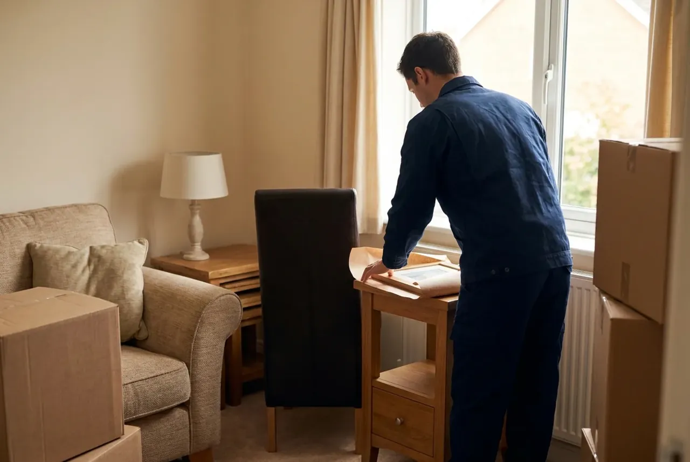
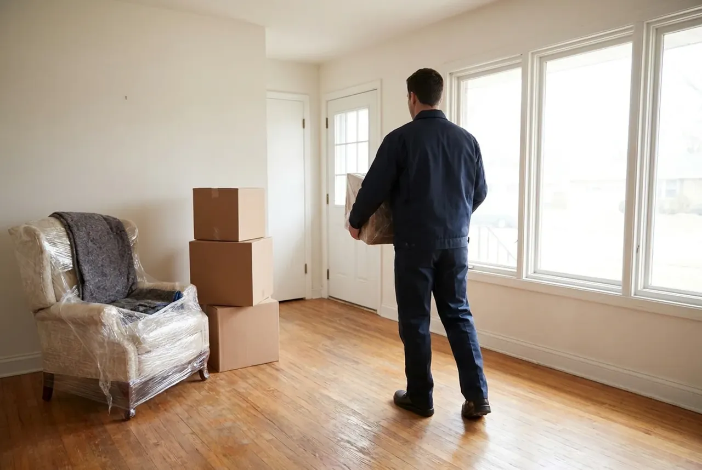

Kleiner wonen
Naar een seniorenwoning: kiezen wat meegaat
Wie na dertig of veertig jaar een eengezinswoning verlaat voor een appartement zonder trap, verhuist niet alleen spullen. Het gaat om kiezen: welke stoel, welke kast, welke dozen met herinneringen. Dat kiezen kost meer tijd dan het verhuizen zelf, en het gaat beter als je er vroeg mee begint.

Een woning vinden
Zoek je een sociale huurwoning in Den Haag en omgeving, dan loopt dat via Woonnet Haaglanden. Inschrijven kost een jaarlijks bedrag. Op de site kun je zoeken op seniorenwoningen en zien of een woning een trap heeft of niet. In de regio Leiden zoek je sociale huurwoningen via Huren in Holland Rijnland; ook daar betaal je elk jaar voor je inschrijving.
In Den Haag kun je voorrang krijgen als je nu in een huis met een trap woont en naar een woning zonder trap wilt. De gemeente noemt daarvoor een paar voorwaarden: je bent 65 jaar of ouder, je woont met maximaal twee personen, je huurt van een woningcorporatie en je huidige woning is niet meer veilig voor je, bijvoorbeeld door de trap. Woon je in een grote sociale huurwoning en wil je kleiner, dan kunnen de seniorenmakelaars van Woonnet Haaglanden helpen zoeken.
Moet je verhuizen door een blijvende ziekte of beperking, dan kun je bij de gemeente een melding doen voor de Wet maatschappelijke ondersteuning (Wmo). De gemeente kijkt dan of je hulp krijgt bij de verhuiskosten. Doe die melding voordat je de verhuizing regelt, en vraag de gemeente wat er wel en niet wordt vergoed.
Begin met de plattegrond
Vraag de plattegrond van de nieuwe woning op, met maten. Meet daarna je meubels, en teken ze op schaal in, of knip ze uit papier. Het klinkt omslachtig, maar het voorkomt de klassieke fout: een kast die mee verhuist en niet past, of een bank die de doorloop naar het balkon blokkeert. Let in een seniorenwoning extra op loopruimte. Rond het bed, in de badkamer en tussen bank en tafel wil je ruimte houden, zeker als er later een rollator of rolstoel bij komt.
Kijk ook naar wat er al is. Veel appartementen hebben een kleinere keuken, minder kastruimte en een berging op een andere verdieping. Wat nu in drie keukenkastjes staat, moet straks in één.
Kiezen, in rondes
Probeer niet alles in één weekend te beslissen. Werk in rondes, kamer voor kamer, en begin bij de plekken met de minste emotie: de schuur, de berging, de logeerkamer. Daar oefen je het kiezen. Fotoalbums, brieven en de spullen van een overleden partner bewaar je voor het laatst, als het ritme erin zit.
Een paar vragen die helpen:
- Heb ik dit het afgelopen jaar gebruikt?
- Is er in het nieuwe huis een vaste plek voor?
- Gaat het om het ding zelf, of om de herinnering? Een foto van een groot meubel neemt geen ruimte in.
- Wie in de familie zou het graag hebben?
Laat kinderen of kleinkinderen op tijd weten wat ze mogen hebben, en spreek een datum af waarop ze het ophalen. Wat daarna overblijft, kan naar de kringloop, verkocht worden of mee met een ontruiming.

Wat zeker meegaat
Neem de dingen mee die het nieuwe huis direct vertrouwd maken: de eigen stoel, het eigen bed als dat past, de klok die altijd tikte, een paar schilderijen. Een mooie nieuwe inrichting is fijn, maar vertrouwde spullen doen meer. Een nieuwe woning met de eigen leunstoel bij het raam voelt sneller als thuis.
Een rustige verhuisdag
Voor iemand die zelf niet meer kan sjouwen, is de verhuisdag vooral wachten en kijken. Een paar dingen maken die dag lichter:
- Laat het bed als eerste neerzetten en opmaken, dan is er een plek om even te rusten.
- Zet de spullen die elke dag gebruikt worden op dezelfde plek als in het oude huis: de bril naast de stoel, de pillendoos bij de waterkoker.
- Vraag één familielid om de hele dag het aanspreekpunt te zijn, zodat niet iedereen tegelijk vragen stelt.
- Plan de verhuizing niet op een dag met een ziekenhuisafspraak of iets anders dat al energie kost.
Bij een seniorenverhuizing via Kade Verhuizingen ligt het tempo bewust lager, en is er vooraf tijd om samen door te nemen wat mee moet en waar het komt te staan.
Het oude huis achterlaten
Huur je, dan moet de oude woning op een vaste datum leeg en schoon worden opgeleverd. Hoe het opzeggen en opleveren werkt, lees je in je huurwoning opzeggen en opleveren.
Bronnen
- Gemeente Den Haag, Wonen voor senioren (Woonnet Haaglanden, zoeken op seniorenwoningen en trap, voorrang 65+ met voorwaarden, seniorenmakelaars, Wmo-melding voor verhuiskosten), geraadpleegd 15-11-2026
- Woonnet Haaglanden en Huren in Holland Rijnland (jaarlijkse inschrijving), geraadpleegd 15-11-2026